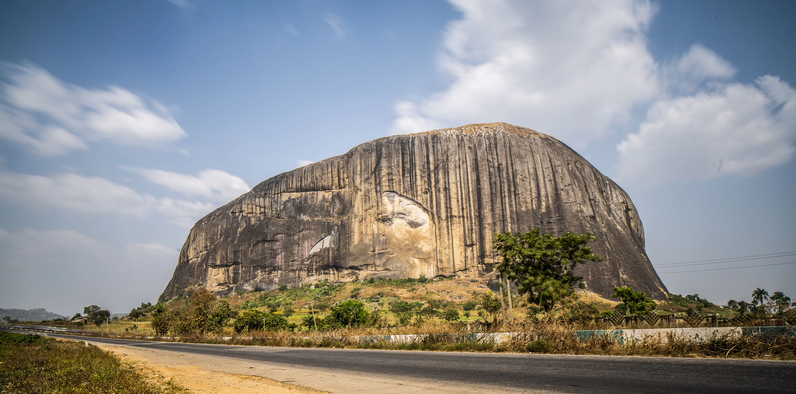
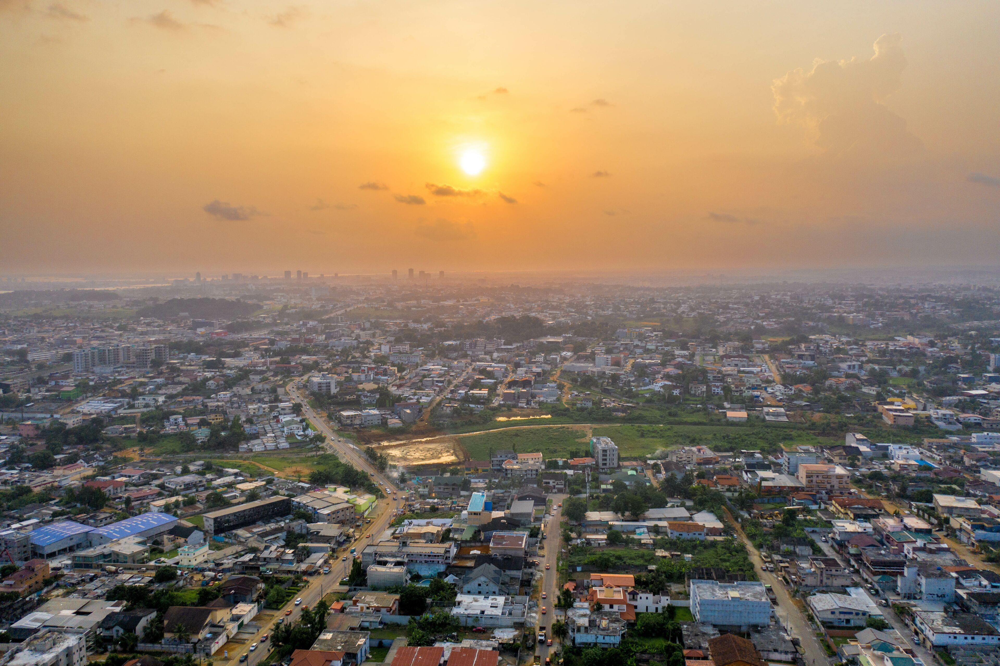
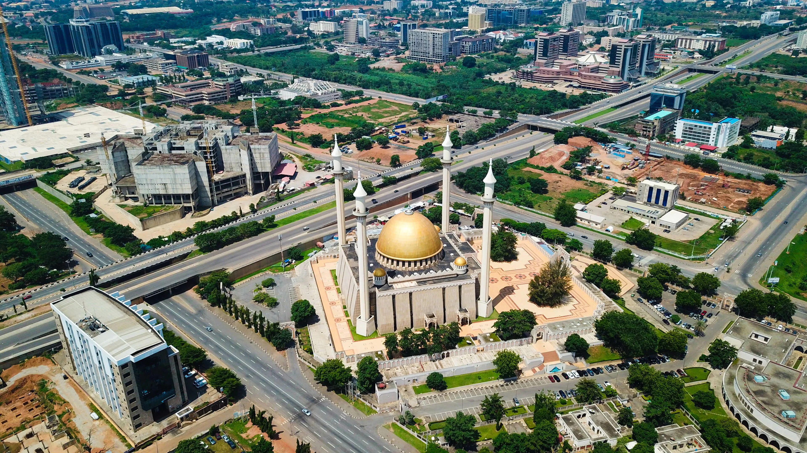
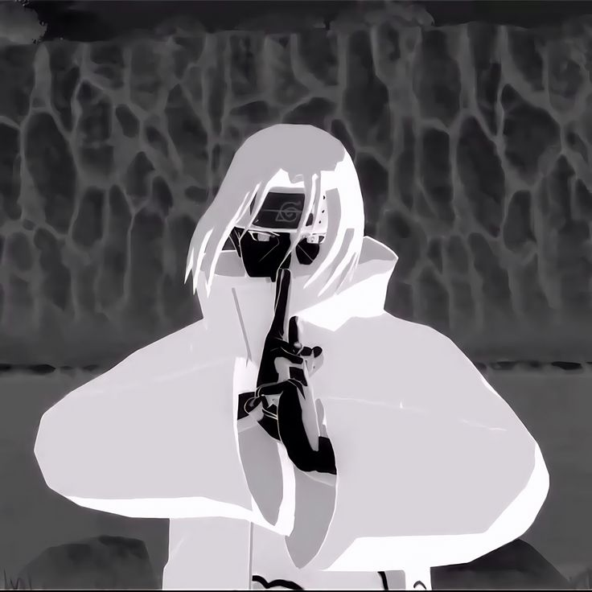

Check out Abuja's iconic gateway monolith. It's a massive natural landmark and a perfect spot for stunning travel photos.

Enjoy a peaceful boat ride or a sunset stroll. It's the best spot in the city to escape the hustle and unwind by the water.

Marvel at the stunning golden domes and intricate design of this landmark, located right in the heart of the city center.

I have lived in Abuja for over 18 years. I can show you all of its best parts and hidden secrets.